Sobre Nosotros
El
Estudio
Sianca + Casas Dubois es un estudio de arquitectura con base en Buenos Aires, especializado en proyectos de diversas tipologías y entornos. Nuestra práctica se apoya en un proceso de trabajo riguroso: del programa a la materialidad, de la escala urbana al detalle constructivo.
Operamos en distintas geografías —Buenos Aires, Salta, Patagonia— con equipos técnicos locales y una dirección de proyecto centralizada que garantiza coherencia entre la propuesta arquitectónica y el resultado construido.
Sianca
Egresado de FADU-UBA. Especializado en diseño proyectual, coordinación técnica y gestión de obra en tipologías residenciales, de uso mixto y corporativas. Interviene en todas las etapas del proceso: desde el anteproyecto hasta la dirección de obra, asegurando coherencia entre la propuesta arquitectónica y el resultado construido. Su práctica pone especial énfasis en la resolución técnica y la calidad espacial.
Casas Dubois
Egresado de FADU-UBA, oriundo de Salta. Docente en la cátedra Amette (FADU-UBA) y ganador de Mención de Honor en dos concursos internacionales de ideas: Hyde Park Music Pavilion, Londres (2019) y Uyuni Salt Flat Shelter, Sevilla (2020). Con más de cuatro años de práctica independiente, desarrolla proyectos residenciales y asesora a inversores en el rubro de la construcción. Actualmente cursa un MBA en IAE Business School, integrando visión de negocio a la práctica arquitectónica.
Portfolio
Proyectos
seleccionados
Arelauquen Modern Lodge
Lodges exclusivos emplazados en el barrio privado de Arelauquen, San Carlos de Bariloche, con vistas al Cerro Catedral y al bosque patagónico. La propuesta establece una relación continua entre interior y exterior, disolviendo los límites entre ambos para que los habitantes sean parte del entorno natural y sus bellos paisajes en las distintas estaciones del año. La arquitectura adopta materiales nobles del lugar —madera y piedra— en volumetrías que se integran al paisaje, mientras que galerías y grandes paños vidriados prolongan el habitar hacia afuera.


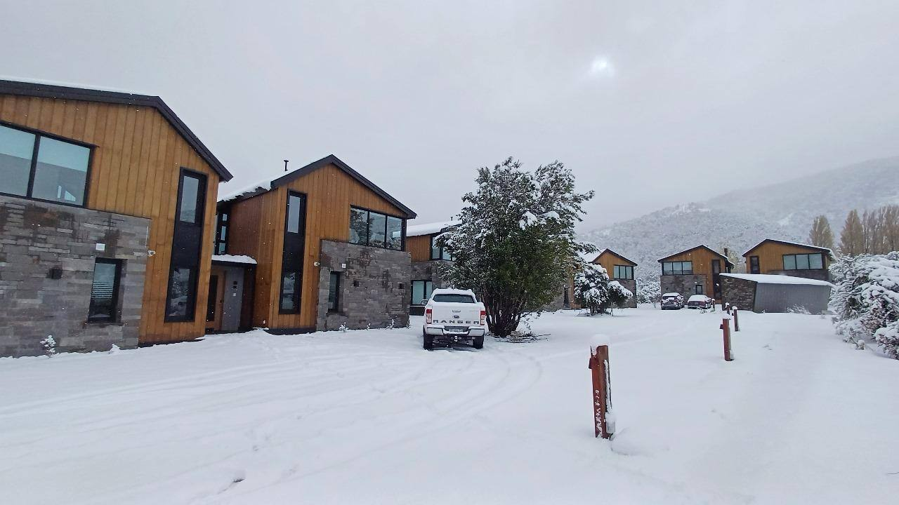
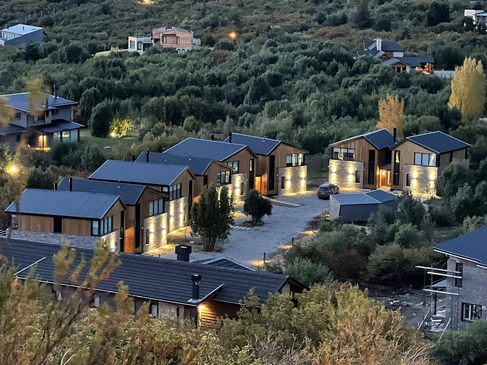


Zadig & Voltaire — Nordelta
Proyecto integral de arquitectura comercial para la reconocida marca francesa de indumentaria Zadig & Voltaire, emplazado en el Centro Comercial Nordelta, Buenos Aires. El trabajo comprendió la gestión y dirección de obra del local completo: desde la concepción volumétrica del edificio exento hasta la definición de la envolvente, los interiores comerciales y la identidad espacial de la marca. La fachada de chapa perforada retroiluminada genera una imagen de alto impacto que distingue al local en el contexto del centro comercial, tanto de día como de noche.
Ortopedia Alemana
Desarrollo proyectual ejecutivo de nuevo edificio de uso mixto para Ortopedia Alemana. El proyecto interviene sobre una estructura preexistente de tres pisos en estado de abandono, reconvirtiéndola y adaptándola a los nuevos requerimientos programáticos, e integrándola con el edificio corporativo contiguo de la empresa. El programa resultante articula sectores hospitalarios especializados, locales comerciales y plantas de oficinas en una solución arquitectónica coherente que responde tanto a las normativas técnicas de cada uso como a la identidad institucional de la firma.


Residencia Universitaria Universidad Austral
Proyecto desarrollado para un concurso de arquitectura. Residencia universitaria organizada en torno a un patio central que articula la vida interior con el campus. La planta baja aloja funciones públicas —hall, oratorio, comedor, living y salas de estar— mientras los pisos superiores organizan dormitorios, salas de trabajo y gimnasio. El proyecto incorpora estrategias sustentables: ventilación cruzada, vegetación en fachadas y terrazas, recolección de aguas pluviales y sistemas fotovoltaicos. Materialidad sobria en hormigón visto, ladrillo y aluminio.


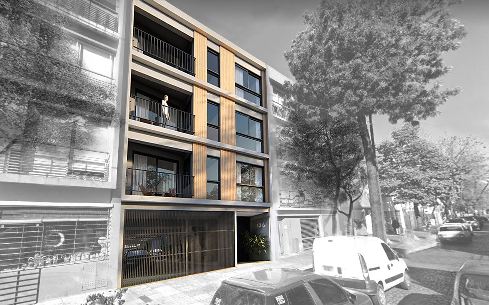

Residencia Familiar en La Horqueta
Vivienda unifamiliar emplazada en el barrio La Horqueta, San Isidro, Buenos Aires. La propuesta desarrolla una volumetría contemporánea de dos plantas con cubierta a dos aguas, resuelta en revestimiento de siding blanco y carpinterías de aluminio. El proyecto articula los espacios interiores con el entorno arbolado del barrio, generando una arquitectura de escala residencial y carácter moderno.
Vivienda Multifamiliar — San Isidro
Diseño proyectual de edificio residencial multifamiliar en San Isidro. Los módulos del edificio se implantan en un terreno pasante de calle a calle, generando una planta baja libre y pasante destinada a estacionamiento, con múltiples núcleos de circulación vertical que articulan las distintas tipologías de unidades. Las unidades se organizan en torno a un núcleo de circulación con pasarelas abiertas a un jardín interior, estrategia que incorpora luz natural y vegetación al corazón del edificio. La materialidad combina hormigón visto, madera y vidrio, buscando una escala sensible al tejido residencial del barrio.
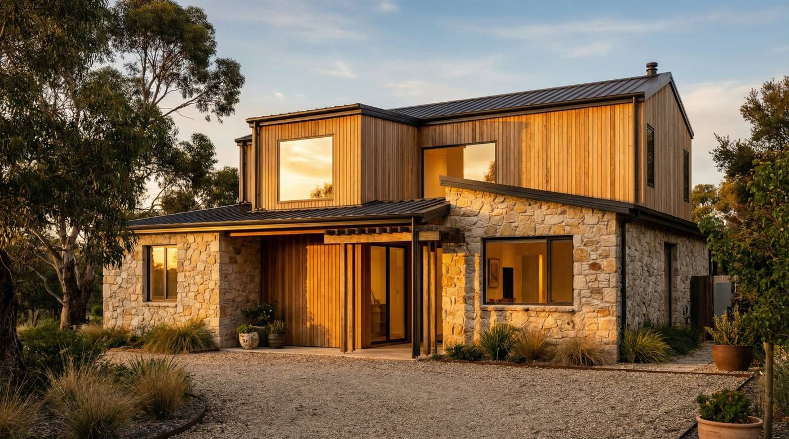
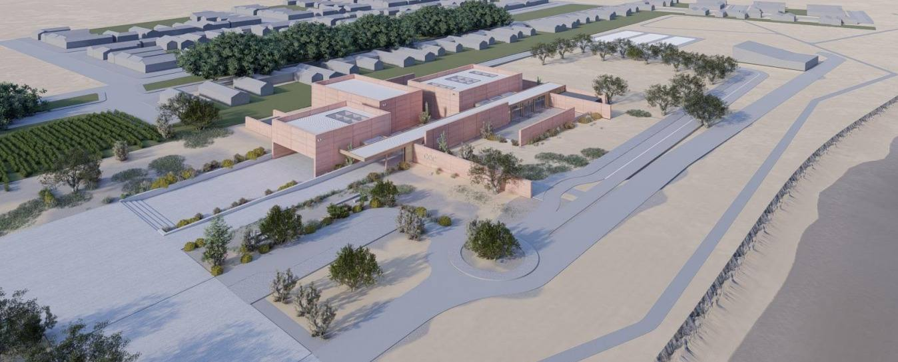
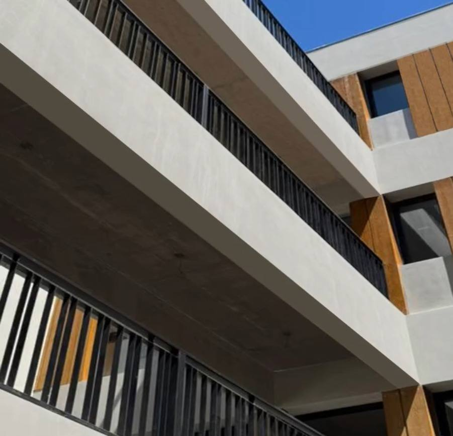
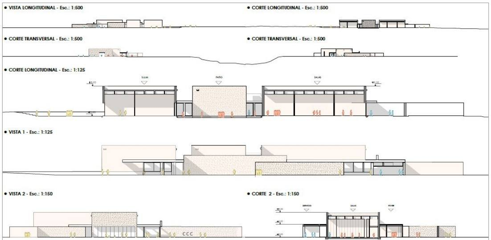
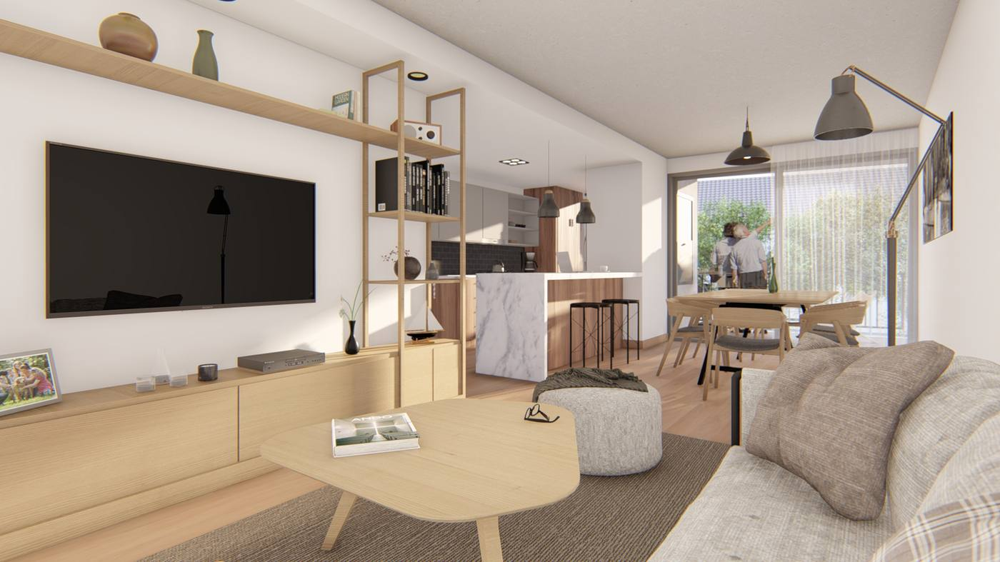
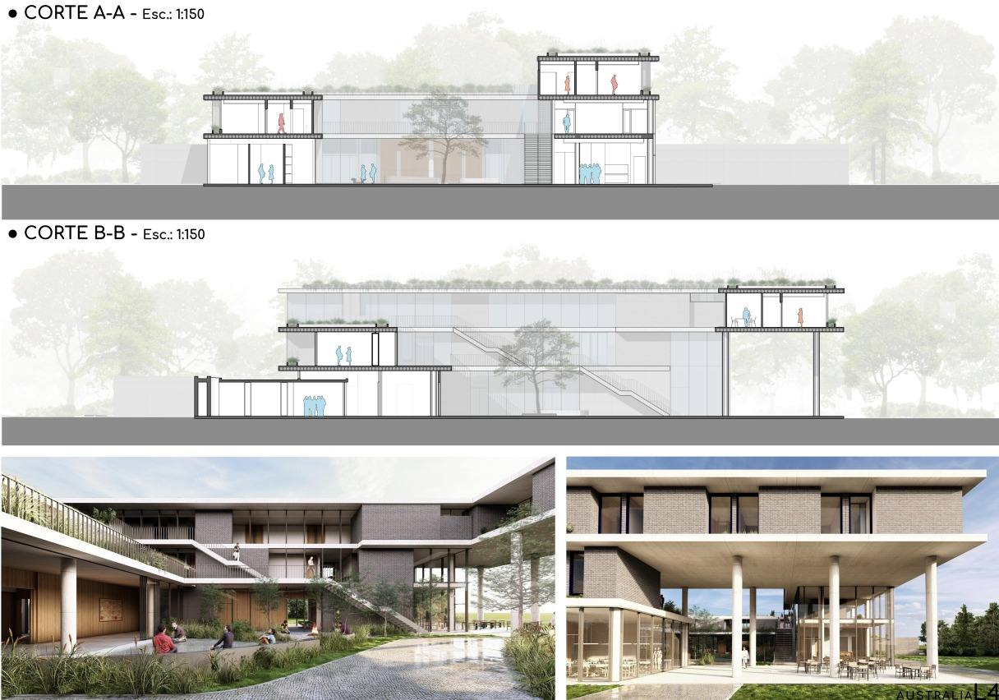


Centro de Convenciones de Cafayate
Proyecto desarrollado para un concurso nacional de arquitectura, en el que obtuvo una mención honorífica. Concurso nacional de anteproyecto para el diseño del Centro de Convenciones de Cafayate, Salta. La propuesta responde al entorno vitivinícola y paisajístico de la región, integrando programa cultural, gastronómico y de eventos en una arquitectura que dialoga con la materialidad local y el horizonte andino.


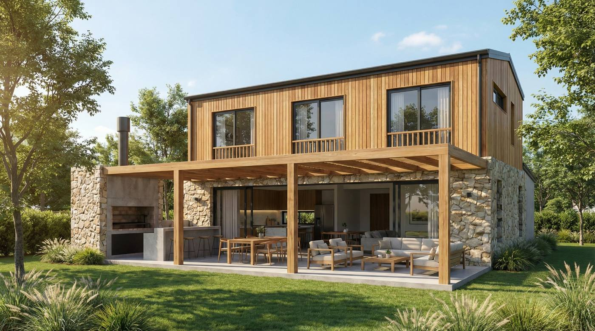
Arquitectura Corporativa
Remodelación y actualización funcional de espacios corporativos e industriales para empresas de escala internacional. El trabajo comprendió el rediseño de oficinas en plantas productivas, interiorismo corporativo en áreas de representación y sectores operativos, integrando identidad de marca, confort y eficiencia en entornos de alta exigencia funcional.
Residencia Familiar en Parques de San Lorenzo
Vivienda unifamiliar emplazada en el barrio cerrado Parques de San Lorenzo, Salta, en un entorno de serranías y vegetación densa. La propuesta integra volumetrías escalonadas que responden a la topografía del terreno, con aberturas de gran formato que incorporan el paisaje al interior. La combinación de muros revestidos en piedra natural, carpinterías negras y madera genera una arquitectura de carácter contemporáneo y arraigo regional.
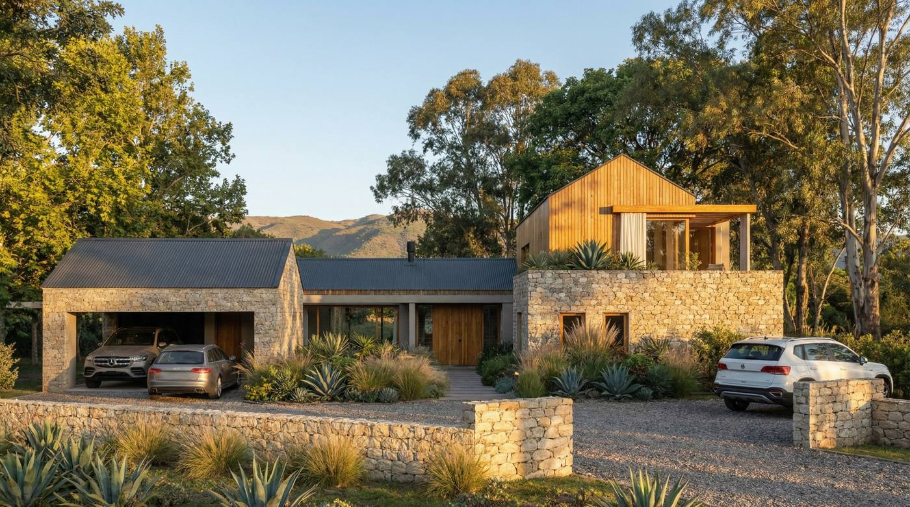

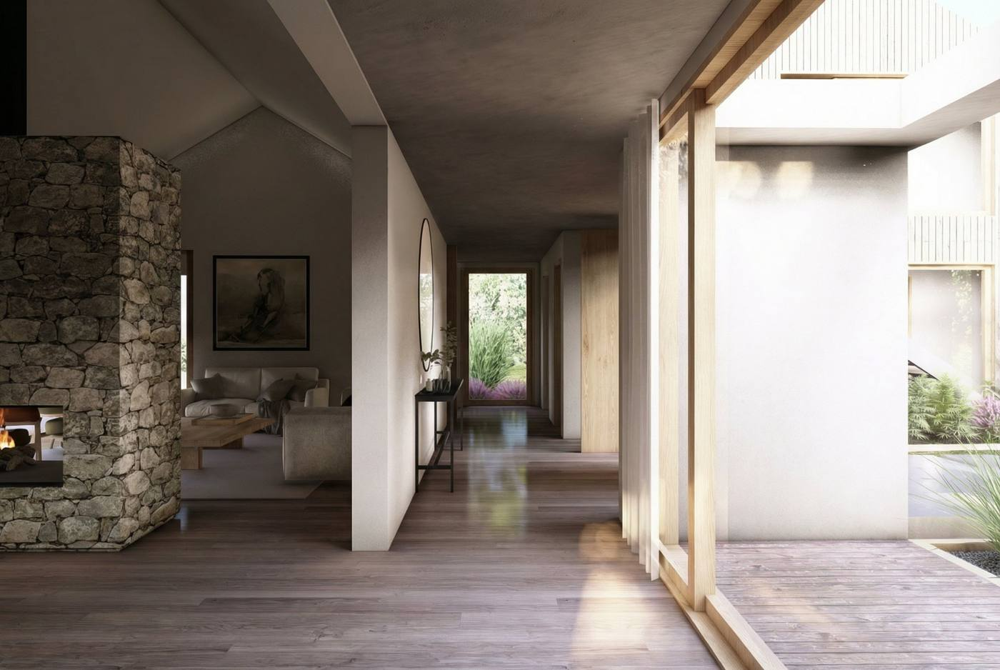

Casa MS
Vivienda unifamiliar emplazada en San Lorenzo, Salta. El proyecto responde a las condiciones del entorno residencial con una volumetría contemporánea y una materialidad que dialoga con el tejido del barrio.
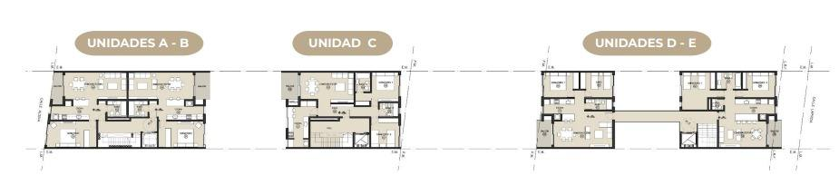
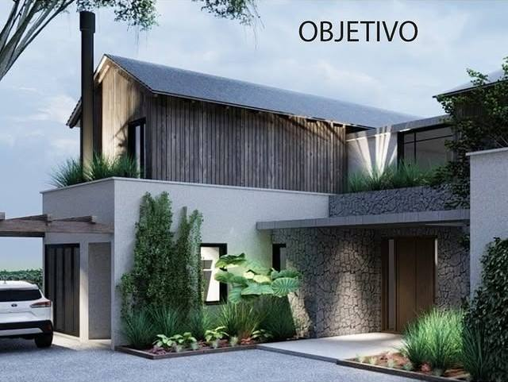
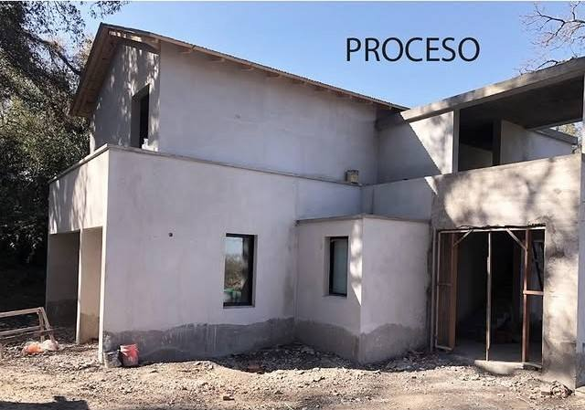
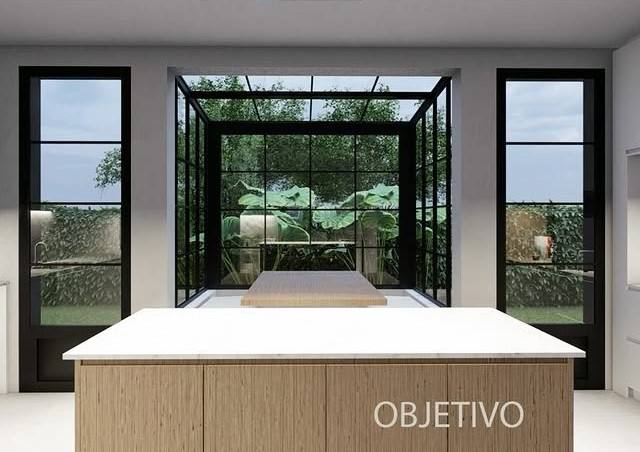

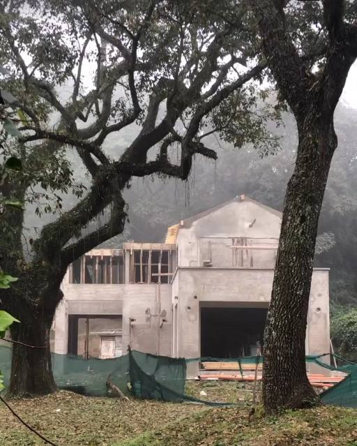
Marayuí
Vivienda de verano emplazada en el barrio privado Marayuí, Chapadmalal, Buenos Aires. El proyecto integra conceptos de casa de playa y farmhouse en una propuesta que responde al clima costero y la exigencia del entorno marítimo. Los materiales fueron seleccionados por su resistencia a la humedad y la sal: piedra natural en basamentos y muros exteriores, y revestimiento de siding cementicio símil madera en fachadas, que combina la calidez visual de la madera con la durabilidad requerida por el clima. El resultado es una arquitectura relajada y arraigada al paisaje, que integra espacios interiores generosos con galerías y terrazas orientadas al exterior.


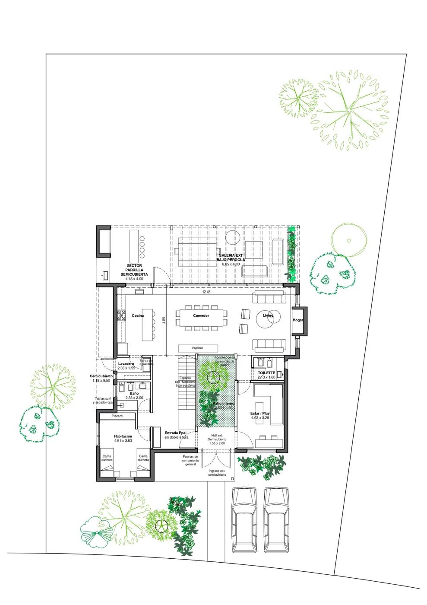
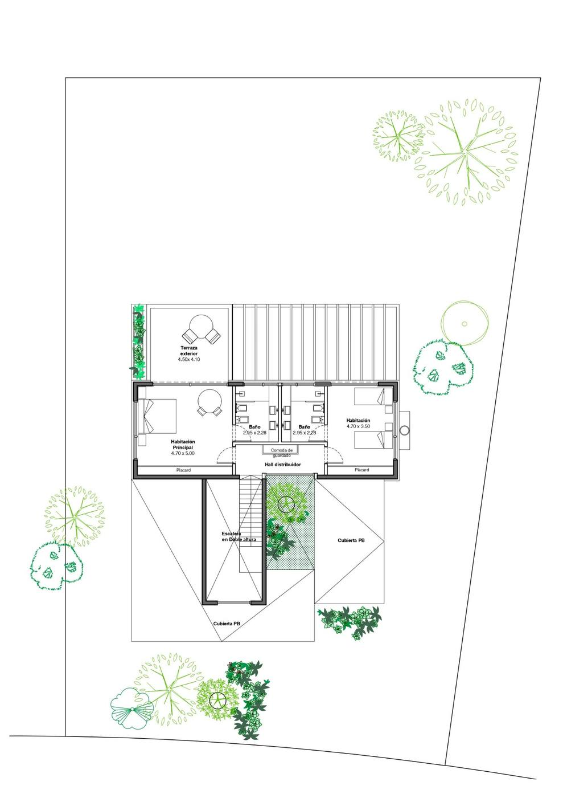
Casa JC
Vivienda unifamiliar emplazada en el barrio privado Bosque Chico, Tortuguitas, Buenos Aires. El proyecto propone una arquitectura de volumetría horizontal que se integra al entorno arbolado del country, con espacios interiores fluidos orientados al jardín y la piscina. La materialidad —hormigón visto, madera y cristal— establece un lenguaje contemporáneo coherente con el paisaje verde del barrio.
Casa MH
Vivienda unifamiliar emplazada en el barrio Los Invernaderos — Concepto Urbano, Salta. El proyecto responde a las condiciones del entorno residencial con una volumetría contemporánea y una materialidad que dialoga con el tejido del barrio.
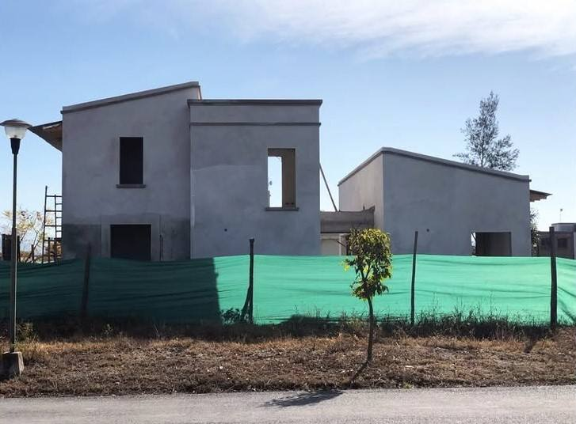

Vivienda Multifamiliar — Villa Pueyrredón
Diseño proyectual de edificio residencial en Villa Pueyrredón, Buenos Aires. La planta baja está destinada a uso comercial, mientras que los pisos superiores albergan las unidades residenciales. La fachada de lenguaje contemporáneo articula hormigón visto, ladrillo visto y cristal en una composición que otorga identidad propia al edificio dentro del tejido barrial. Los balcones en voladizo modulan la escala urbana y generan transiciones graduales entre el espacio privado y la calle.
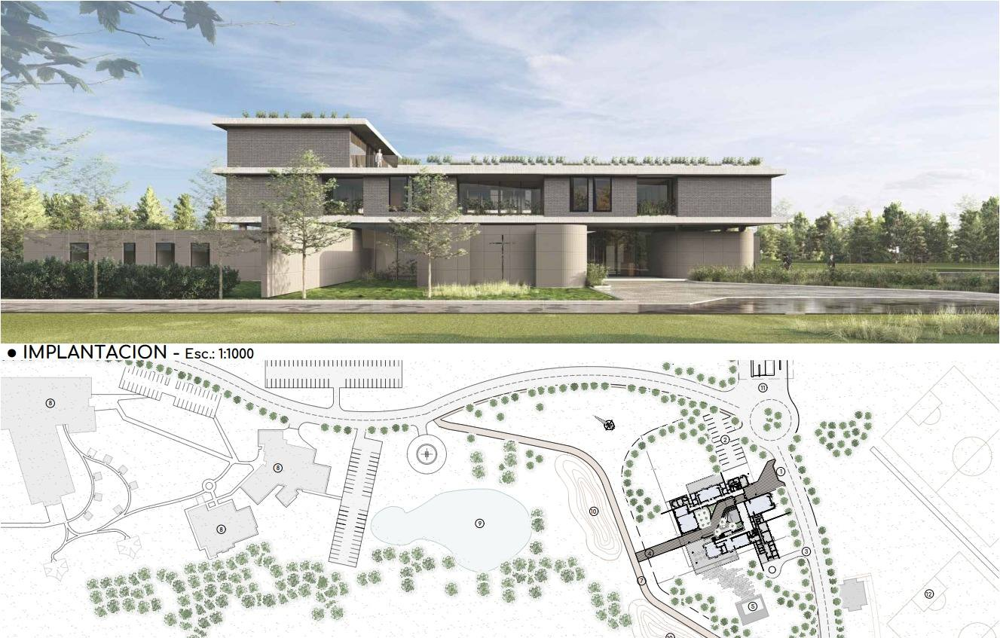

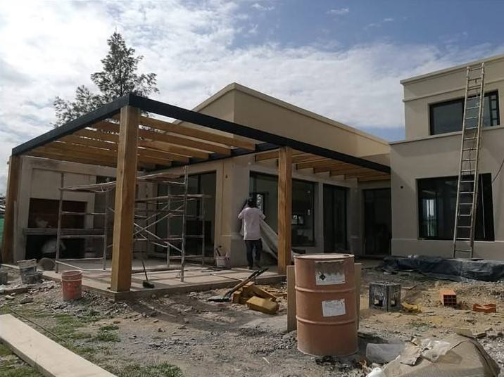

Contacto
Arquitecto
Nicolás
Sianca
Arquitecto